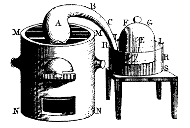
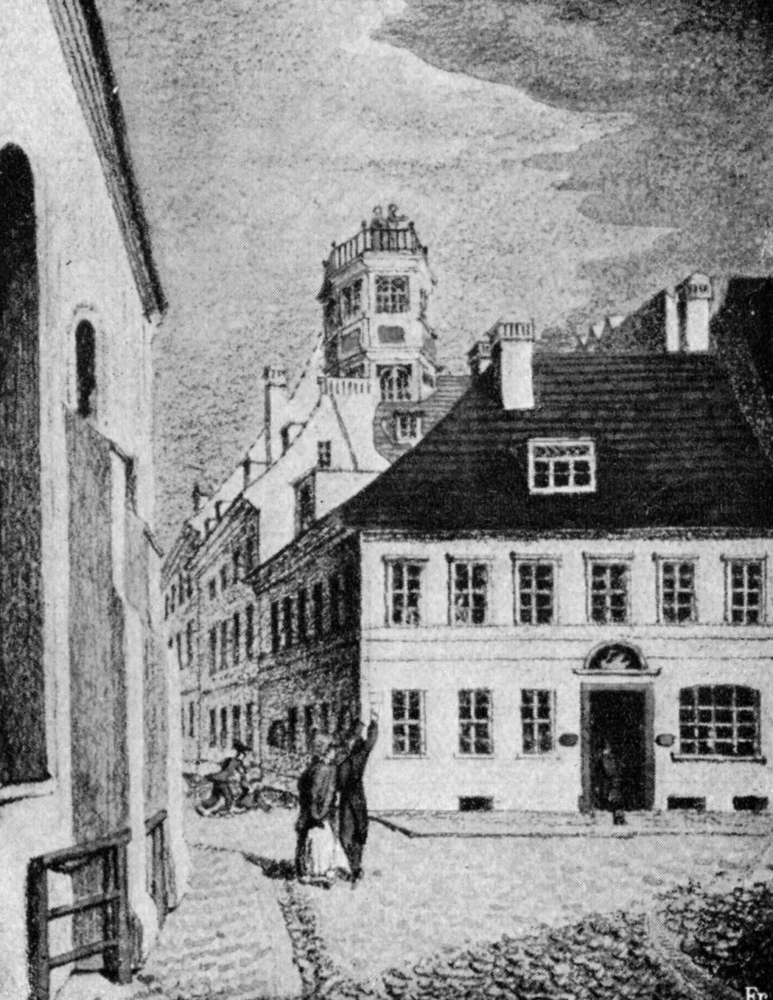
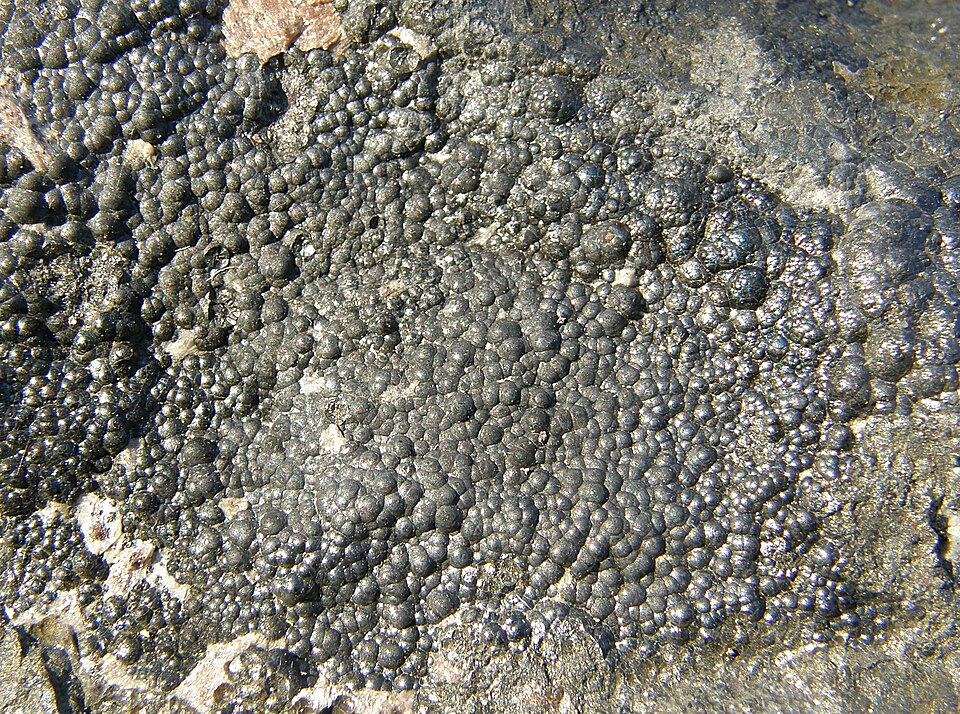
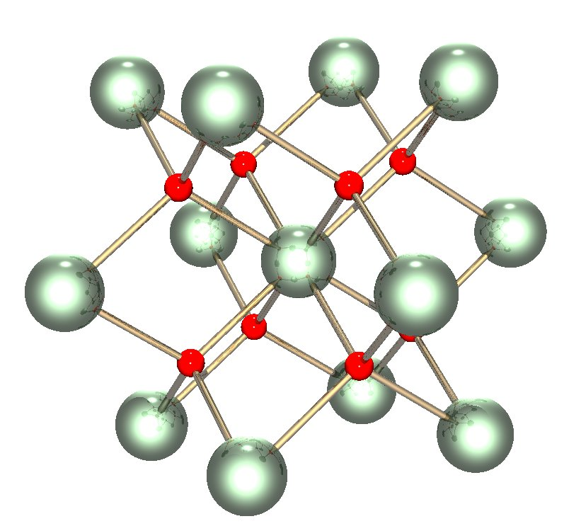
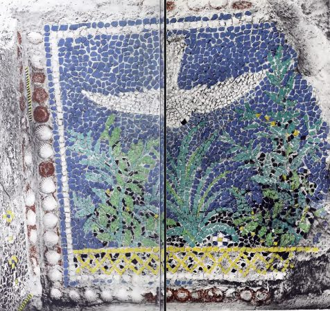
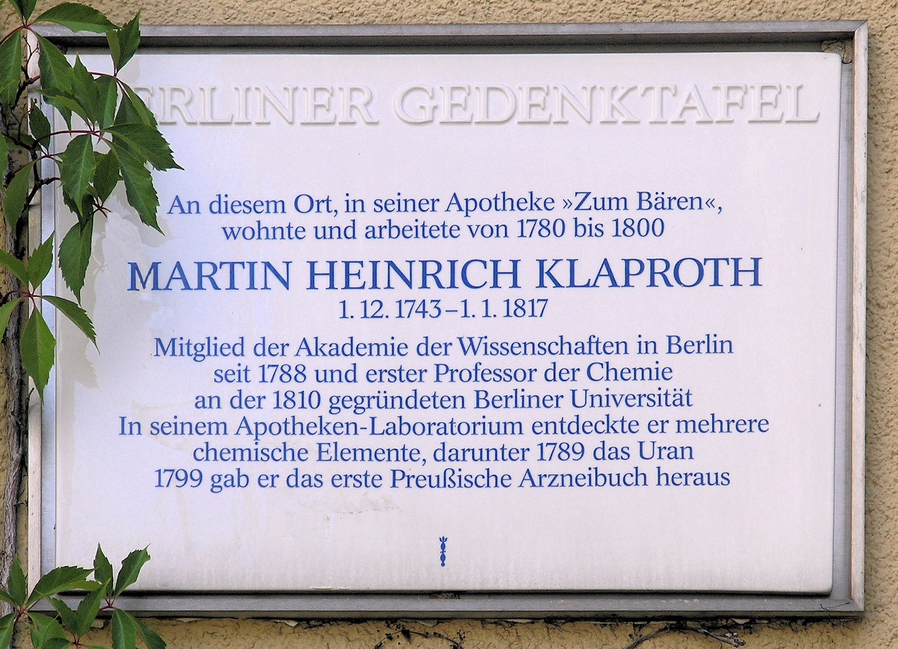

The Chemical Revolution of the Eighteenth Century

For much of the eighteenth century, chemists believed in phlogiston, a mysterious substance thought to escape from materials as they burned. Yet careful experiments began to tell a different story: metals gained weight when heated, defying expectations.
In the 1770s, Antoine-Laurent Lavoisier provided a new explanation based on quantitative experiments. Combustion and calcination were not losses of matter, but combinations with oxygen. This discovery did more than overturn a theory; it marked a turning point in the history of science.
Chemistry was gradually moving beyond traditional chemical practices and speculative theories and becoming a discipline based on precise measurement, systematic experimentation, and reproducible results. By the end of the century, chemistry was evolving from a traditional craft into a modern quantitative science.
Among the scientists who helped shape this transformation was Martin Heinrich Klaproth. While Lavoisier provided many of the theoretical foundations of the chemical revolution, Klaproth contributed to the development of rigorous analytical methods that gave the new chemistry reliability and credibility. He believed that every measurement, every residue, and every unexpected result deserved attention rather than dismissal. This attitude led him to refine chemical analysis to a remarkable level of accuracy for his time and opened the way to important discoveries in chemistry, mineralogy, and beyond.
Why is Klaproth still important?
- He helped transform chemistry into a quantitative science.
- He developed reliable analytical methods.
- He identified uranium, zirconium, and other elements.
- He influenced the rise of modern mineralogy.
- He promoted a culture of precision and reproducibility.
From Apothecary to Analytical Chemist

Martin Heinrich Klaproth was born in the small town of Wernigerode, in the Harz Mountains, on December 1, 1743. The son of a tailor, he grew up outside the academic institutions and learned societies that shaped much of eighteenth-century science.
Between 1759 and 1764, he trained as an apothecary in Quedlinburg. He then spent several years working as a journeyman in pharmacies in Quedlinburg, Hannover, Berlin, and Danzig, gaining the practical experience that would later shape his scientific career.
A decisive turning point came in 1780, when his marriage to Christiane Sophie, a niece of the distinguished Berlin chemist Andreas Sigismund Marggraf, helped him acquire the Bären-Apotheke, formerly owned by Marggraf. More than a successful business, the pharmacy became the place where Klaproth gradually transformed himself from an apothecary into an investigator of nature.
Behind the dispensary lay a modest laboratory where, after the demands of daily work had been met, he devoted countless hours to chemical experiments. It was here that his reputation as an exceptionally careful analyst began to take shape.
By the mid-1780s, Klaproth was turning increasingly toward the chemical investigation of minerals, an emerging field that would soon revolutionize both chemistry and mineralogy. Working with extraordinary patience and precision, he developed a reputation for exceptionally reliable analyses, treating unexpected results as opportunities for further investigation. This methodical approach would characterize his entire scientific career.
What was it like to analyze a mineral in 1789?
Klaproth had no spectroscope, no periodic table, and no electronic instruments. A mineral was crushed into powder, heated in a furnace, dissolved in acids, precipitated with reagents, filtered, washed, dried, and weighed repeatedly. A single analysis could require days of painstaking work. The discovery of a new element was not a sudden flash of insight, but the result of patience, careful measurements, and the refusal to ignore unexpected residues.
The Search for New Elements: Uranium and Beyond

Pitchblende (uraninite)

Crystal lattice structure of uranium dioxide (UO2)
For centuries, miners had extracted a heavy mineral known as pitchblende, or Pechblende in German, from the Ore Mountains (Erzgebirge) along the Saxon–Bohemian border, a region famous for its deposits of silver, tin, cobalt, and other valuable ores. Unlike these useful materials, pitchblende appeared to have little economic value. Yet hidden within its dark and seemingly unremarkable appearance was an element that would later become one of the most important in modern science.
In 1789, Klaproth—by then one of Europe’s most skilled chemical analysts—examined samples of this mysterious mineral in his Berlin laboratory and identified the presence of a previously unknown substance. Through a series of careful chemical procedures, using both dry and wet methods of analysis, he obtained and identified an oxide of a previously unknown element. He recognized this discovery as evidence of a new element and, in honor of William Herschel’s discovery of Uranus in 1781, named it uranium.
Klaproth’s conclusion was not the result of a single experiment, but of a long and patient investigation. Whenever a result appeared uncertain, he repeated his procedures and carefully examined the material again, following the analytical discipline that had become the foundation of his scientific work. His experiments, however, also revealed the limits of eighteenth-century chemistry: despite his efforts, he was unable to reduce the oxide to the pure metallic element.
The substance identified by Klaproth was not metallic uranium but a uranium oxide. The first isolation of metallic uranium was achieved decades later, in 1841, by the French chemist Eugène-Melchior Péligot (1811–1890). Nevertheless, Klaproth’s discovery represented a fundamental step in the history of chemistry. More than a century later, the same element he had studied as a mineral curiosity would play a central role in the discovery of radioactivity and, later, in the development of nuclear fission and nuclear energy, revealing a significance that no eighteenth-century chemist could have imagined.
A common misconception
Klaproth did not isolate metallic uranium. He identified an oxide of uranium, recognized it as evidence of a new element, and proposed the name uranium. Metallic uranium was isolated later by Eugène-Melchior Péligot in 1841.

Uranium Before Its Discovery

The use of uranium-containing materials long predates their formal chemical identification. During excavations of a Roman villa on Cape Posillipo near the Bay of Naples in 1911–1912, R. T. Gunther of Oxford University uncovered a richly colored glass mosaic. He dated it—based on archaeological and historical evidence—to the period around the eruption of Mount Vesuvius in 79 A.D. Analysis of a pale green sample at Oxford in 1912 revealed that it contained over 1 percent uranium oxide. After reviewing the evidence, the American chemist and historian Earle R. Caley suggested that the addition of uranium minerals had been deliberate, making it an early documented example of the use of uranium-containing materials in human history.
Scientific Legacy

Martin Heinrich Klaproth’s work reflected a view of chemistry not merely as a collection of laboratory techniques, but as a way to understand the natural world through careful measurement, disciplined observation, and systematic experimentation. His work helped advance analytical chemistry as a rigorous scientific discipline based on accuracy and reproducibility.
Although his identification of uranium was the discovery that made him most famous, Klaproth's contribution to chemistry extended far beyond a single element. Through his investigations of minerals and unknown substances, he developed methods of analysis that influenced a new generation of chemists.
His contemporaries admired not only his scientific rigor but also his dedication to teaching and sharing knowledge. Driven by scientific curiosity and a commitment to accuracy, Klaproth combined patience, precision, and intellectual honesty in his research. His career represents an important moment in the transformation of chemistry from a discipline still influenced by traditional practices into a modern experimental science.
He was not only a pioneer in the identification of new elements; he was one of the scientists who helped create the culture of precision that defines modern chemistry.
Timeline
Glossary of Scientific Terms
Gravimetric analysis
A method of quantitative chemical analysis in which the constituent sought is converted into a substance of known composition that can be separated from the sample and weighed.
Metal
A chemical element characterized by metallic properties, such as electrical and thermal conductivity, and the ability to form positive ions in many chemical compounds.
Metal calx
A historical term referring to the residue or oxide obtained when a metal is heated (calcined) in air; later understood to be a metal combined with oxygen.
Oxide
Binary compounds composed of oxygen and another element, either metallic or non-metallic.
Polymorphism
The ability of a solid chemical compound to exist in more than one crystalline structure, with the same chemical composition but different arrangements of its atoms or molecules.
Uranium
A heavy, naturally occurring metallic chemical element (symbol U, atomic number 92), discovered as a new element by Martin Heinrich Klaproth in 1789.
Original Works
- M. H. Klaproth, Chemische Untersuchung der Mineralquellen zu Carlsbad, Berlin, 1790. Digital edition.
- M. H. Klaproth, Beiträge zur chemischen Kenntnis der Mineralkörper, 6 vols., 1795–1815. Digital edition.
- M. H. Klaproth, Chemische Untersuchung des Uranits, einer neuentdeckten metallischen Substanz , Chemische Annalen, 2 (1789), 387–403. Digital edition (pp. 387–403).
Klaproth in One Minute
- Born: Wernigerode, 1743
- Profession: Apothecary turned chemist
- Breakthrough: Identification of uranium oxide (1789)
- Method: Careful quantitative analysis
- Legacy: Analytical chemistry and mineral chemistry
- Died: Berlin, 1817
References and Further Reading
Weeks, M. E.
Discovery of the Elements, Journal of Chemical Education
(1956).
Archive.org
Klein, U.
Chemists for the Common Good, Bulletin for the History of
Chemistry, 42(1), 2017.
Max Planck Institute for the History of Science, Berlin.
PDF
Maar, J. H.
Martin Heinrich Klaproth (1743–1817), a Great, Somewhat
Forgotten, Chemist,
Substantia, 7(2), 161–178 (2023).
DOI
Marshall, J. L. and Marshall, V. R.
Rediscovery of the Elements: Klaproth,
The Hexagon (Summer 2008).
PDF
Image Credits and Sources
Fig. 1 — Martin Heinrich Klaproth (1743–1817). Engraving by Ambroise Tardieu, after a portrait by Eberhard-Siegfried Henne. Source: Smithsonian National Museum of American History. Public domain.
Fig. 2 — Apparatus used by Antoine Lavoisier to study the composition of air, reproduced from Traité élémentaire de chimie (1789). Source: Wikimedia Commons. Public domain.
Fig. 3 — Valentin Rose’s pharmacy, “Zum weißen Schwan”. Historical illustration. Source: University of Pennsylvania Libraries – Colenda Digital Repository. Rights: Copyright status not evaluated (CNE).
Fig. 4a — Crystal lattice of uranium dioxide (UO2). Author: Cadmium. Source: Wikimedia Commons. Public domain.
Fig. 4b — Pitchblende (uraninite) from the Niederschlema-Alberoda deposit, Saxony, Germany. Author: Geomartin. Source: Wikimedia Commons. Licensed under CC BY-SA 3.0.
Fig. 5 — Frontispiece of Martin Heinrich Klaproth’s Beiträge zur chemischen Kenntnis der Mineralkörper. Source: DFG-Viewer.
Fig. 6 — Roman glass mosaic from Cape Posillipo, remarkable for the depth and luminosity of its colors. From Gunther, R. T. (Robert Theodore), 1869–1940. Source: Wikimedia Commons. Public domain.
Fig. 7 — Memorial plaque dedicated to Martin Heinrich Klaproth, Spandauer Straße 25, Berlin-Mitte, Germany. Photograph by OTFW, Berlin (2007). Source: Wikimedia Commons. Licensed under CC BY-SA 3.0.